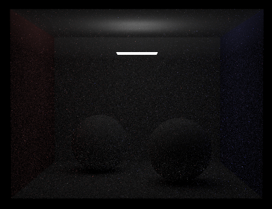
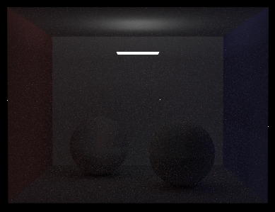

I extended the reference implementation of the Assigment 3 Path Tracer to include support for Bi-directional Path Tracing. Rays shot into the scene originate both from the camera and the light sources. After a certain number bounces each, the two types of Rays are made to connect. Bi-directional Path Tracing is particularly useful for scenes where light from the light sources does not directly reach most of the scene geometry. Scenes like this rendered using Standard Path Tracing techniques show a higher degree of variance as compared to solutions provided by Bi-directional Path Tracing.
To demonstrate this, I modified the Cornell Box with lambertian spheres so that the Area Light is smaller and is directed towards the ceiling. Only a small portion of the celing is directly illuminated. The rest of the scene is illuminated by indirect light bouncing off of the ceiling.
On the left is an image renedred using the Assigment 3 Reference implementation using 6400 samples per pixel and with maximum Camera Ray Path Length 6. In contrast, on the right is an image renedred using my Bi-directional implementation using 3200 samples per pixel, maximum Camera Ray Path Length 4 and Light Path length 2. There is visibly less noise (less variance) in the output image and overall, the scene is better lit.
Rendering Time: 4681.4274 s
Rendering Time: 4681.4274 s
Implementation
I implemented a light ray generator that returns a random ray originating from the light source and returns the Spectrum of light emitted in that direction, along with the probability of picking said random direction. This is used as the starting point of tracing rays from the light sources.
I modified trace_ray() so that when the camera path is terminated, instead of returning outgoing radiance immediately, a light path is traced for each light soirce in the scene. For each source, a light ray is generated originating from the light and the recursive light path tracing begins.
The recursive light tracing routine calculates the intersection of the light ray with the scene. If there is no intersection, the call is terminated and 0 radiance is returned since this path can never make it back to the camera.
The irradiance carried by the light path is weighed by the BRDF of the surface of the intersection point and the probability of choosing the random reflected direction. This becomes the new irradiance carried by the light path and is passed on to the subsequent recursive call with the reflected direction of the light ray.
The light path terminates when the maximum depth specified at run time is reached. A 'shadow ray' is shot from the camera path termination point towards the light path termination point. If the camera end point is not occluded from the light end point by other scene geometry, the light source's contribution is added to the outgoing radiance at this point.
How to Run
Build the same way as for Assigment 3. I added an extra commandline option -n that lets you specify the maximum Light Path length. The -m option from Assigment 3 specifies the maximum Camera Path length. The dae file I modified, named 'CBspheres_lambertian_bidir_withlight.dae', is included in my handin directory.
More Images
Standard 512 SSP m 4 Time: 207.29s
Bi-Dir 512 SSP m 2 n 2 Time: 505.75s

Standard 256 SSP m 4 Time: 102.38s

Bi-Dir 256 SSP m 3 n 1 Time: 210.74s
Things to Note
The output image is brighter when the light path is shorter. This is beacuse less light gets abosorbed due to bounces off diffuse surafces before light paths are connected to camera paths.
There are weird artifacts on the spheres' surafces when the light path is only 1 unit long. I imagine that this might be due to the fact that camera paths that terminate below the "equator" on the spheres can never be connected to light paths since light paths end points are located on a very small region of the ceiling.
I have not shown an exampled with specular surfaces, but, I found it important to note that if a camera path happens to terminate on the specular surface, the contribution of the light path to this point on a surface will always be zero since the probabilty of choosing the exact mirror relfected direction or transmission direction in case of refractive surafces is zero.
Bi-directional Path Tracing (my implementation) is significantly slower than Standard Path Tracing for the same number of samples per pixel, but the variance (shows up as noise in the output image) is visibly lower.